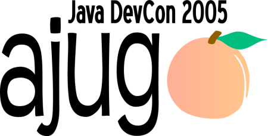

The Atlanta Java Users Group conference for professional software developers.
| Date: | 25 May 2005 |
| Time: | 8:00AM - 5:30PM |
| Location: | Cobb Galleria, Marietta, GA Google Maps |
| Cost: | $75/person (includes breakfast and lunch!) |
Discover how industry experts identify optimal solutions, learn how to leverage the newest Java specifications and related technologies, and review case studies from other development groups across Atlanta.
The Atlanta Java Users Group 2nd annual conference for Java Enthusiasts. Our first event was a tremendous success with over 150 local Java experts, seven excellent presentations and our sponsoring exhibitors. Many developer conferences cost between $300 and $600 a day making this AJUG event an incredible educational and networking value!
Topic: Sneak Peak at what's coming for the Java Platform
Speaker: Matt Thompson
Bio: As Director of Technology Outreach & Sun's Open Source Programs Office, Matt Thompson leads Sun's developer program (the Sun Developer Network) Sun's technology evangelism efforts worldwide, and driving Sun's open source strategy for developers. His team focuses on both building communities and educating and enabling communities of developers to easily adopt Sun's emerging technologies across both the Java and Solaris platforms.
Abstract: This session will cover much of the "what's new" that will be talked about at JavaOne this June in San Francisco. In addition we will cover the "opening up" of the Java platform" (Project Peabody and GlassFish), and several other initiatives around performance, ease of development, and compatibility.
Topic: Struts Best Practices
Speaker: James Mitchell
James serves as a member of the Apache Struts PMC (Project Management Committee) and is one of a handful of active committers on the Apache Struts and Jakarta Commons projects.
James is the owner and CEO of EdgeTech, Inc. He works as an independent consultant with clients in Atlanta, California, and New York. James has over 11 years of experience in building Web Applications for the E-commerce, Banking, Government, and Financial Services industries. Through his company, James also provides specialized services and training for companies needing team development training, mentoring, and/or project recovery.
Topic: Integrating Flash Rich Internet Applications (RIA) with Java
Speaker: Dan Glauser, Leif Wells, Jesse Warden
Dan Glauser has 8 years of industry experience and has architected, written, deployed, and maintained numerous large scale applications for companies like BellSouth (southeast), Benefit Point (San Francisco, CA), and numerous others. Dan has a B.S. in Computer Science for the University of Massachusetts at Amherst.
Leif Wells is the Director of Multimedia Services at Roundbox Media. Leif has 15 years of interactive media experience as a lead developer with companies like IBM, Coca-Cola, Home Depot, UPS, and Georgia-Pacific. Leif runs the Atlanta Macromedia User Group
Jesse Warden is a professional multimedia developer working at Round Box Media, and specializes in Flash Development. He has spoken at many venues including MXDU 2003, 2005, multiple Atlanta Macromedia User Groups, and other venues about various Macromedia products and technologies.
Topic: Spring Unleashed
Speaker: Keith Donald
Bio: Keith has been involved with the Spring Framework as a user and core contributor since July 2003. He is the founder of the Spring Rich Client Project (spring-rich), an emerging module built on core Spring that substantially reduces the time and effort required to build a well-architected, enterprise-ready java desktop applications. He is also the co-lead of the Spring Web Flow module, a core Spring web offering that lets developers model business processes that span many screens in a logical manner.
Abstract: The past two years have seen a growing trend towards lightweight architectures as alternatives to traditional EJB-centric architectures. In this approach, application services and domain objects are designed as POJOs (Plain Old Java Objects), resulting in fine-grained application components that are reusable and testable outside a container. This can significantly increase productivity and allows easier use of agile processes in J2EE development. Key enabling technologies include lightweight containers such as Spring and HiveMind, and O/R mapping frameworks such as Hibernate, JDO and TopLink.
This session introduces the Spring Framework and its lightweight container architecture, focusing on its powerful Dependency Injection capabilities, the Spring AOP framework and the popular Spring JDBC framework. It will highlight Spring's transaction management capabilities--in particular, declarative transactions for POJOs--and illustrate data access object design for strategies such as JDBC and Hibernate, which are supported out-of-the-box and integrated in a consistent architectural style.
The session will discuss the value-add of using a lightweight container within a J2EE application, contrasting it with traditional programming models. It will show that Spring does not compete with J2EE servers and the core system services provided by them; instead, Spring adds architectural value within J2EE applications, leveraging J2EE services without coupling application components to a concrete J2EE environment.
Attendees will learn about the motivation for the lightweight container movement and the benefits of a lightweight, test-driven, development approach from two pioneers in the area who are also best-selling authors on the topic. They will learn about the valuable services that the Spring Framework provides for a wide variety of architectural scenarios.
Topic: Insider's View of Hibernate 3.0
Speaker: Gavin King
Bio: Gavin is the founder of the Hibernate project, the leading persistence solution for Java. He is an active member of the JSR-220 expert group, and contributed heavily to the design of EJB 3.0. With Christian Bauer, he was author of /Hibernate in Action/. Gavin works for JBoss, Inc, leading the development of Hibernate, implementing EJB 3.0, and providing services to JBoss customers. He lives in Melbourne, Australia, and Atlanta, Georgia
Abstract: This presentation will focus on Hibernate and the relationship between Hibernate and the upcoming EJB 3 feature set. Highlighted will be new features in Hibernate 3.0 including inheritance mapping, temporal and regional data, and the ability to use Hibernate along with hand-written SQL as a JDBC framework.
Topic: Workflow Made Easy with JBoss jBPM
Speaker: Kevin Barfield
Bio: Kevin is a Systems Engineer with JBoss. Prior to joining JBoss, Kevin worked in the middleware application market for 10 years as an architect and developer. Kevin has a Masters of Science and Bachelor of Science in Electrical Engineering from the University of Tennessee.
Abstract: This presentation will cover the workflow foundation called graph oriented programming. Gain insight in how graph oriented programming integrates with the java platform and how it allows the usage of the JVM as the runtime environment for business processes. Server side developers will learn what to expect from a workflow management system.
Topic: java.net: Turning "community" into the killer app for Java
Developers
Speaker: John Bobowicz
Bio: John is the CTO of www.java.net, founder and original community manager. As java.net CTO, He is getting more involved within the community and focusing on the technologies of java.net. This includes letting the world know about cool technologies and projects on java.net as well as looking for cool and new technologies to join java.net. He gets to write more code in this role and tinker with new technologies and that should be fun! John will also be working to get more involvement out of the "Java Industry" and hopefully recruit more companies and industry groups to join and contribute.
Abstract: The killer app for Java Developers is collaboration and java.net provides the ultimate online community for collaborative development. Feature rich with collaboration tools like Wikis, Blogs, CVS, Issue Tracking, Instant Messaging, and more, java.net is a virtual playground for Java developers. With over 130,000 members and 1,800+ projects, if there's something new or cool going on in Java, it's happening on java.net. Whether it's Java3D, Project Looking Glass, Real Time Java, or Mustang, you will find it here. Learn how you can be part of these exciting innovations as they happen instead of just reading about them elsewhere.
Topic: Java Server Faces & Java Studio Creator
Speaker: Roger Kitain
Bio: Roger is currently the co-spec lead for JavaServer Faces at Sun Microsystems. Roger has extensively been involved with server side web technologies and products since 1997, including the early development efforts of the Software Download Center, Sun One Identity Server, and the JavaServer Faces Reference Implementation
More speaker details to come...
AJUG's sponsors available as exhibitors. Plus, meal times create an ideal environment to meet other Atlanta-based software developers. Sometimes it is not what you know but who you know.
© 2005 Atlanta Java Users Group (AJUG)